Chapter 3 Análisis Exploratorio de Datos (EDA)
3.1 Extracción, Transformación y Carga (ETL)
En esta sección preparamos la base de datos para el EDA: la cargamos, validamos su estructura, limpiamos variables innecesarias y revisamos si existen valores faltantes.
- Instalar librerías necesarias
- Cargar conjunto de datos
datos <- read_csv("C:/Users/natal/Downloads/estimation+of+obesity+levels+based+on+eating+habits+and+physical+condition/ObesityDataSet_raw_and_data_sinthetic.csv")## Rows: 2111 Columns: 17
## ── Column specification ─────────────────────────
## Delimiter: ","
## chr (9): Gender, family_history_with_overweig...
## dbl (8): Age, Height, Weight, FCVC, NCP, CH2O...
##
## ℹ Use `spec()` to retrieve the full column specification for this data.
## ℹ Specify the column types or set `show_col_types = FALSE` to quiet this message.- Verificamos que se leyeron los datos correctamente (dimensiones, nombres, estructura, encabezado y cola)
## [1] 2111 17## [1] "Gender"
## [2] "Age"
## [3] "Height"
## [4] "Weight"
## [5] "family_history_with_overweight"
## [6] "FAVC"
## [7] "FCVC"
## [8] "NCP"
## [9] "CAEC"
## [10] "SMOKE"
## [11] "CH2O"
## [12] "SCC"
## [13] "FAF"
## [14] "TUE"
## [15] "CALC"
## [16] "MTRANS"
## [17] "NObeyesdad"## spc_tbl_ [2,111 × 17] (S3: spec_tbl_df/tbl_df/tbl/data.frame)
## $ Gender : chr [1:2111] "Female" "Female" "Male" "Male" ...
## $ Age : num [1:2111] 21 21 23 27 22 29 23 22 24 22 ...
## $ Height : num [1:2111] 1.62 1.52 1.8 1.8 1.78 1.62 1.5 1.64 1.78 1.72 ...
## $ Weight : num [1:2111] 64 56 77 87 89.8 53 55 53 64 68 ...
## $ family_history_with_overweight: chr [1:2111] "yes" "yes" "yes" "no" ...
## $ FAVC : chr [1:2111] "no" "no" "no" "no" ...
## $ FCVC : num [1:2111] 2 3 2 3 2 2 3 2 3 2 ...
## $ NCP : num [1:2111] 3 3 3 3 1 3 3 3 3 3 ...
## $ CAEC : chr [1:2111] "Sometimes" "Sometimes" "Sometimes" "Sometimes" ...
## $ SMOKE : chr [1:2111] "no" "yes" "no" "no" ...
## $ CH2O : num [1:2111] 2 3 2 2 2 2 2 2 2 2 ...
## $ SCC : chr [1:2111] "no" "yes" "no" "no" ...
## $ FAF : num [1:2111] 0 3 2 2 0 0 1 3 1 1 ...
## $ TUE : num [1:2111] 1 0 1 0 0 0 0 0 1 1 ...
## $ CALC : chr [1:2111] "no" "Sometimes" "Frequently" "Frequently" ...
## $ MTRANS : chr [1:2111] "Public_Transportation" "Public_Transportation" "Public_Transportation" "Walking" ...
## $ NObeyesdad : chr [1:2111] "Normal_Weight" "Normal_Weight" "Normal_Weight" "Overweight_Level_I" ...
## - attr(*, "spec")=
## .. cols(
## .. Gender = col_character(),
## .. Age = col_double(),
## .. Height = col_double(),
## .. Weight = col_double(),
## .. family_history_with_overweight = col_character(),
## .. FAVC = col_character(),
## .. FCVC = col_double(),
## .. NCP = col_double(),
## .. CAEC = col_character(),
## .. SMOKE = col_character(),
## .. CH2O = col_double(),
## .. SCC = col_character(),
## .. FAF = col_double(),
## .. TUE = col_double(),
## .. CALC = col_character(),
## .. MTRANS = col_character(),
## .. NObeyesdad = col_character()
## .. )
## - attr(*, "problems")=<externalptr>## # A tibble: 5 × 17
## Gender Age Height Weight
## <chr> <dbl> <dbl> <dbl>
## 1 Female 21 1.62 64
## 2 Female 21 1.52 56
## 3 Male 23 1.8 77
## 4 Male 27 1.8 87
## 5 Male 22 1.78 89.8
## # ℹ 13 more variables:
## # family_history_with_overweight <chr>,
## # FAVC <chr>, FCVC <dbl>, NCP <dbl>,
## # CAEC <chr>, SMOKE <chr>, CH2O <dbl>,
## # SCC <chr>, FAF <dbl>, TUE <dbl>, CALC <chr>,
## # MTRANS <chr>, NObeyesdad <chr>- verificamos que no existan valores faltantes en el dataset.
## Warning: Unknown or uninitialised column: `arguments`.
## Unknown or uninitialised column: `arguments`.## Warning: Unknown or uninitialised column:
## `imputations`. Como podemos notar en la gráfica, ninguna de las 17 valiables del dataset tiene valores faltantes.
Como podemos notar en la gráfica, ninguna de las 17 valiables del dataset tiene valores faltantes.
3.2 Análisis variable objetivo (NObeyesdad)
- Consideremos el resumen de la variable NObeyesdad
## # A tibble: 7 × 3
## NObeyesdad n Porcentaje
## <chr> <int> <dbl>
## 1 Insufficient_Weight 272 12.9
## 2 Normal_Weight 287 13.6
## 3 Obesity_Type_I 351 16.6
## 4 Obesity_Type_II 297 14.1
## 5 Obesity_Type_III 324 15.3
## 6 Overweight_Level_I 290 13.7
## 7 Overweight_Level_II 290 13.7- Veamos un diagrama de barras
# Crear tabla de frecuencias para la variable
tabla_NObeyesdad <- datos %>%
count(NObeyesdad, name = "Tipo_de_obesidad") %>%
mutate(Porcentaje = round(Tipo_de_obesidad / sum(Tipo_de_obesidad) * 100, 1),
Etiqueta = paste0(Tipo_de_obesidad, " (", Porcentaje, "%)"))
# Gráfico
tabla_NObeyesdad %>%
ggplot(aes(x = factor(NObeyesdad), y = Tipo_de_obesidad)) +
geom_col(fill = "#008B8B", width = 0.6) +
geom_text(aes(label = Etiqueta), vjust = -0.5, size = 3) +
facet_grid(~ "Tipo de sobrepeso de los encuestados") +
scale_y_continuous(expand = expansion(mult = c(0, 0.15))) +
labs(x = "Tipo de Sobrepeso", y = "Tipo de Sobrepeso (Porcentaje)") +
theme_bw(base_size = 14) +
theme(
plot.title = element_blank(),
strip.background = element_rect(fill = "gray80", color = NA),
strip.text = element_text(face = "bold"),
panel.grid.major.y = element_blank(),
axis.text.y = element_text(size = 8)
)
El gráfico, acompañado de la tabla de frecuencias, muestra que la población estudiada presenta una alta proporción de individuos con algún grado de obesidad. La categoría Obesity_Type_I es la más común (16.6%), seguida de Obesity_Type_III (15.3%) y Obesity_Type_II (14.1%), lo que significa que cerca del 45% de la muestra se encuentra en niveles de obesidad moderada a severa. Las categorías de sobrepeso (Overweight_Level_I y Overweight_Level_II) representan en conjunto un 27.4%, mientras que el peso normal alcanza solo un 13.6% y el bajo peso un 12.9%. Esta distribución evidencia una tendencia preocupante hacia el exceso de peso y una baja representación de individuos con peso saludable, lo que puede reflejar una problemática real de salud pública o un sesgo en la selección de la muestra. Además, la relativa uniformidad en las frecuencias entre clases facilita el posterior modelado predictivo sin problemas severos de desbalance.
3.3 Análisis exploratorio univariado de variables independientes numéricas
- Veamos un resumen de cada variable independiente numérica
#variables independientes numéricas----
datos %>%
summarise(
n = length(Age),
media = mean(Age),
ds = sd(Age),
mediana = median(Age),
minimo = min(Age),
maximo = max(Age),
Q1 = quantile(Age, 0.25),
Q3 = quantile(Age, 0.75),
IQR = IQR(Age)) %>%
mutate(variable = "Age") -> var_num_edad
datos %>%
summarise(
n = length(Height),
media = mean(Height),
ds = sd(Height),
mediana = median(Height),
minimo = min(Height),
maximo = max(Height),
Q1 = quantile(Height, 0.25),
Q3 = quantile(Height, 0.75),
IQR = IQR(Height)) %>%
mutate(variable = "Height") -> var_num_est
datos %>%
summarise(
n = length(Weight),
media = mean(Weight),
ds = sd(Weight),
mediana = median(Weight),
minimo = min(Weight),
maximo = max(Weight),
Q1 = quantile(Weight, 0.25),
Q3 = quantile(Weight, 0.75),
IQR = IQR(Weight)) %>%
mutate(variable = "Weight") -> var_num_peso
datos %>%
summarise(
n = length(FCVC),
media = mean(FCVC),
ds = sd(FCVC),
mediana = median(FCVC),
minimo = min(FCVC),
maximo = max(FCVC),
Q1 = quantile(FCVC, 0.25),
Q3 = quantile(FCVC, 0.75),
IQR = IQR(FCVC)) %>%
mutate(variable = "FCVC") -> var_num_evm
datos %>%
summarise(
n = length(NCP),
media = mean(NCP),
ds = sd(NCP),
mediana = median(NCP),
minimo = min(NCP),
maximo = max(NCP),
Q1 = quantile(NCP, 0.25),
Q3 = quantile(NCP, 0.75),
IQR = IQR(NCP)) %>%
mutate(variable = "NCP") -> var_num_meal
datos %>%
summarise(
n = length(CH2O),
media = mean(CH2O),
ds = sd(CH2O),
mediana = median(CH2O),
minimo = min(CH2O),
maximo = max(CH2O),
Q1 = quantile(CH2O, 0.25),
Q3 = quantile(CH2O, 0.75),
IQR = IQR(CH2O)) %>%
mutate(variable = "CH2O") -> var_num_agu
datos %>%
summarise(
n = length(FAF),
media = mean(FAF),
ds = sd(FAF),
mediana = median(FAF),
minimo = min(FAF),
maximo = max(FAF),
Q1 = quantile(FAF, 0.25),
Q3 = quantile(FAF, 0.75),
IQR = IQR(FAF)) %>%
mutate(variable = "FAF") -> var_num_phy
datos %>%
summarise(
n = length(TUE),
media = mean(TUE),
ds = sd(TUE),
mediana = median(TUE),
minimo = min(TUE),
maximo = max(TUE),
Q1 = quantile(TUE, 0.25),
Q3 = quantile(TUE, 0.75),
IQR = IQR(TUE)) %>%
mutate(variable = "TUE") -> var_num_tec
bind_rows(var_num_edad, var_num_est, var_num_peso, var_num_evm, var_num_meal, var_num_agu, var_num_phy, var_num_tec) %>%
select(variable, everything())## # A tibble: 8 × 10
## variable n media ds mediana minimo
## <chr> <int> <dbl> <dbl> <dbl> <dbl>
## 1 Age 2111 24.3 6.35 22.8 14
## 2 Height 2111 1.70 0.0933 1.70 1.45
## 3 Weight 2111 86.6 26.2 83 39
## 4 FCVC 2111 2.42 0.534 2.39 1
## 5 NCP 2111 2.69 0.778 3 1
## 6 CH2O 2111 2.01 0.613 2 1
## 7 FAF 2111 1.01 0.851 1 0
## 8 TUE 2111 0.658 0.609 0.625 0
## # ℹ 4 more variables: maximo <dbl>, Q1 <dbl>,
## # Q3 <dbl>, IQR <dbl>La tabla revela las siguientes tendencias:
Variables demográficas: La edad se concentra en adultos jóvenes (media: 24.3 años), con pocos casos mayores a 50 años. La estatura presenta baja variabilidad (media: 1.70 m), mientras que el peso exhibe gran dispersión (39 a 173 kg), reflejando diversidad en los estados nutricionales.
Variables alimentarias: El consumo de vegetales (FCVC) se ubica en un rango medio (media: 2.42 en escala 1–3), y la mayoría consume entre 2 y 3 comidas principales al día (NCP). El consumo promedio de agua (2.01 L/día) se encuentra por debajo de las recomendaciones internacionales.
Variables de estilo de vida: La frecuencia de actividad física (FAF) es muy baja (media: 1.01 en escala relativa), mientras que el uso de dispositivos electrónicos (TUE) refleja hábitos sedentarios moderados.
Estas estadísticas sugieren un estilo de vida con actividad física insuficiente y hábitos de hidratación mejorables, lo que podría estar relacionado con los altos niveles de obesidad observados.
- Gráficos de cada variable independiente numérica:
library(patchwork)
library(gridExtra)
# Boxplot de Age
p1 <- datos %>%
ggplot(aes(x="", y = Age)) +
geom_boxplot(fill = "#2f77b9", alpha = 0.7) +
labs(
title = " Edad de los encuestados",
y = "Edad (años)",
x = ""
) +
theme_bw()
# Boxplot de Height
p2 <- datos %>%
ggplot(aes(x="", y = Height)) +
geom_boxplot(fill = "#2c99d1", alpha = 0.7) +
labs(
title = " Estatura de los encuestados",
y = "Altura (m)",
x = ""
) +
theme_bw()
# Boxplot de Weight
p3 <- datos %>%
ggplot(aes(x="", y = Weight)) +
geom_boxplot(fill = "red", alpha = 0.7) +
labs(
title = " Peso de los encuestados",
y = "Peso (kg)",
x = ""
) +
theme_bw()
# Boxplot de FCVC
p4 <- datos %>%
ggplot(aes(x="", y = FCVC)) +
geom_boxplot(fill = "green", alpha = 0.7) +
labs(
title = " Consumo de vegetales",
y = "Cant. Vegetales",
x = ""
) +
theme_bw()
# Boxplot de NCP
p5 <- datos %>%
ggplot(aes(x="", y = NCP)) +
geom_boxplot(fill = "yellow", alpha = 0.7) +
labs(
title = " Cantidad de comidas al día",
y = "Comidas diarias",
x = ""
) +
theme_bw()
# Boxplot de CH2O
p6 <- datos %>%
ggplot(aes(x="", y = CH2O)) +
geom_boxplot(fill = "darkblue", alpha = 0.7) +
labs(
title = " Consumo de agua",
y = "Agua (l)",
x = ""
) +
theme_bw()
# Boxplot de FAF
p7 <- datos %>%
ggplot(aes(x="", y = FAF)) +
geom_boxplot(fill = "#8d42b1", alpha = 0.7) +
labs(
title = " Implementación de actividad fisica ",
y = "Cantidad de actividad fisica",
x = ""
) +
theme_bw()
# Boxplot de TUE
p8 <- datos %>%
ggplot(aes(x="", y = TUE)) +
geom_boxplot(fill = "purple", alpha = 0.7) +
labs(
title = " Utilizacion de aparatos electronicos ",
y = "Cantidad de dispositivos tecnologicos",
x = ""
) +
theme_bw()
#unión de los gráficos
grid.arrange(p1, p2, p3, p4, p5, p6, p7, p8, ncol =3 ,newpage =TRUE) Los boxplots muestran la forma y dispersión de cada variable, permitiendo identificar asimetrías y valores atípicos:
- Edad: Ligera asimetría positiva y presencia de valores atípicos en edades altas.
Los boxplots muestran la forma y dispersión de cada variable, permitiendo identificar asimetrías y valores atípicos:
- Edad: Ligera asimetría positiva y presencia de valores atípicos en edades altas.
Estatura: Distribución simétrica y concentrada, con pocos casos fuera de lo esperado.
Peso: Asimetría positiva marcada y numerosos valores extremos, asociados a obesidad severa.
Consumo de vegetales y comidas diarias: Distribuciones centradas en valores medios, con pocos outliers.
Consumo de agua: Distribución equilibrada, pero con algunos casos de consumo muy bajo o alto.
Actividad física y uso de tecnología: Mayoría de valores bajos con colas hacia la derecha, indicando que pocos individuos realizan mucha actividad física o usan excesivamente dispositivos electrónicos.
Estos hallazgos destacan variables clave (peso, actividad física, uso de tecnología) con alta variabilidad y valores extremos, que deberán tratarse cuidadosamente en etapas posteriores del análisis para evitar sesgos y mejorar la precisión de modelos predictivos.
3.4 Análisis exploratorio univariado de variables independientes categóricas
- Veamos la tabla de frecuencias de todas las variables independientes categóricas
#tabla de frecuencia para Gender
tabla_Gender <- datos %>%
count(Gender, name = "Frecuencia") %>%
mutate(
Porcentaje = round(Frecuencia / sum(Frecuencia) * 100, 2),
Variable = "Gender",
Categoria = Gender) %>%
select(Variable, Categoria, Frecuencia, Porcentaje)
#tabla de frecuencia para family_history_with_overweight
tabla_family_history_with_overweight <- datos %>%
count(family_history_with_overweight, name = "Frecuencia") %>%
mutate(
Porcentaje = round(Frecuencia / sum(Frecuencia) * 100, 2),
Variable = "family_history_with_overweight",
Categoria = family_history_with_overweight) %>%
select(Variable, Categoria, Frecuencia, Porcentaje)
#tabla de frecuencia para FAVC
tabla_FAVC <- datos %>%
count(FAVC, name = "Frecuencia") %>%
mutate(
Porcentaje = round(Frecuencia / sum(Frecuencia) * 100, 2),
Variable = "FAVC",
Categoria = FAVC ) %>%
select(Variable, Categoria, Frecuencia, Porcentaje)
#tabla de frecuencia para CAEC
tabla_CAEC <- datos %>%
count(CAEC, name = "Frecuencia") %>%
mutate(
Porcentaje = round(Frecuencia / sum(Frecuencia) * 100, 2),
Variable = "CAEC",
Categoria = CAEC ) %>%
select(Variable, Categoria, Frecuencia, Porcentaje)
#tabla de frecuencia para SMOKE
tabla_SMOKE <- datos %>%
count(SMOKE, name = "Frecuencia") %>%
mutate(
Porcentaje = round(Frecuencia / sum(Frecuencia) * 100, 2),
Variable = "SMOKE",
Categoria = SMOKE ) %>%
select(Variable, Categoria, Frecuencia, Porcentaje)
#tabla de frecuencia para SCC
tabla_SCC <- datos %>%
count(SCC, name = "Frecuencia") %>%
mutate(
Porcentaje = round(Frecuencia / sum(Frecuencia) * 100, 2),
Variable = "SCC",
Categoria = SCC ) %>%
select(Variable, Categoria, Frecuencia, Porcentaje)
#tabla de frecuencia para CALC
tabla_CALC <- datos %>%
count(CALC, name = "Frecuencia") %>%
mutate(
Porcentaje = round(Frecuencia / sum(Frecuencia) * 100, 2),
Variable = "CALC",
Categoria = CALC ) %>%
select(Variable, Categoria, Frecuencia, Porcentaje)
#tabla de frecuencia para MTRANS
tabla_MTRANS <- datos %>%
count(MTRANS, name = "Frecuencia") %>%
mutate(
Porcentaje = round(Frecuencia / sum(Frecuencia) * 100, 2),
Variable = "MTRANS",
Categoria = MTRANS ) %>%
select(Variable, Categoria, Frecuencia, Porcentaje)
# Unir todas las tablas
bind_rows(tabla_Gender, tabla_family_history_with_overweight, tabla_FAVC,tabla_CAEC,
tabla_SMOKE, tabla_SCC,tabla_CALC, tabla_MTRANS)## # A tibble: 23 × 4
## Variable Categoria Frecuencia Porcentaje
## <chr> <chr> <int> <dbl>
## 1 Gender Female 1043 49.4
## 2 Gender Male 1068 50.6
## 3 family_histor… no 385 18.2
## 4 family_histor… yes 1726 81.8
## 5 FAVC no 245 11.6
## 6 FAVC yes 1866 88.4
## 7 CAEC Always 53 2.51
## 8 CAEC Frequent… 242 11.5
## 9 CAEC Sometimes 1765 83.6
## 10 CAEC no 51 2.42
## # ℹ 13 more rowsLa tabla muestra que la distribución por género es prácticamente equilibrada, con un 50.6% de hombres y un 49.4% de mujeres, lo que favorece comparaciones sin sesgos significativos. La mayoría de los participantes (81.8%) presenta antecedentes familiares de sobrepeso, lo que apunta a una fuerte influencia genética y de hábitos compartidos. Asimismo, un 88.4% declara consumir con frecuencia alimentos altos en calorías, evidenciando un patrón dietético poco saludable generalizado. En cuanto a la alimentación entre comidas, el 83.6% lo hace de forma ocasional, mientras que un 14% (frecuente o siempre) mantiene este hábito de manera más constante, lo que podría incrementar la ingesta calórica diaria.
- Veamos los gráficos de las variables independientes categóricas
#grafico para Gender
tabla_Gender_b <- datos %>%
count(Gender, name = "Frecuencia") %>%
mutate(Porcentaje = round(Frecuencia / sum(Frecuencia) * 100, 1),
Etiqueta = paste0(Frecuencia, " (", Porcentaje, "%)"))
tabla_Gender_b %>%
ggplot(aes(x = Gender, y = Frecuencia)) +
geom_col(fill = "#008B8B", width = 0.6) +
geom_text(aes(label = Etiqueta), vjust = -0.5, size = 5) +
facet_wrap(~ "Distribución de la variable Gender") +
scale_y_continuous(expand = expansion(mult = c(0, 0.15))) +
labs(x = "Género del encuestado",
y = "Frecuencia (Porcentaje)") +
theme_bw(base_size = 14) +
theme(
plot.title = element_blank(),
strip.background = element_rect(fill = "gray80", color = NA),
strip.text = element_text(face = "bold"),
panel.grid.major.x = element_blank()
) El análisis de la variable género revela una distribución prácticamente equilibrada en la muestra, con 1,068 participantes masculinos (50.6%) y 1,043 participantes femeninos (49.4%). Esta distribución casi paritaria es ideal para el análisis exploratorio, ya que permite realizar comparaciones válidas entre géneros sin sesgos significativos de representación. La diferencia de apenas 25 individuos (1.2%) entre ambos grupos garantiza que los hallazgos relacionados con diferencias de género en patrones de obesidad, hábitos alimenticios y actividad física sean estadísticamente robustos y representativos, ofreciendo una base sólida para explorar posibles variaciones asociadas al género en estudios posteriores.
El análisis de la variable género revela una distribución prácticamente equilibrada en la muestra, con 1,068 participantes masculinos (50.6%) y 1,043 participantes femeninos (49.4%). Esta distribución casi paritaria es ideal para el análisis exploratorio, ya que permite realizar comparaciones válidas entre géneros sin sesgos significativos de representación. La diferencia de apenas 25 individuos (1.2%) entre ambos grupos garantiza que los hallazgos relacionados con diferencias de género en patrones de obesidad, hábitos alimenticios y actividad física sean estadísticamente robustos y representativos, ofreciendo una base sólida para explorar posibles variaciones asociadas al género en estudios posteriores.
#grafico para family_history_with_overweight
tabla_family_history_with_overweight_b <- datos %>%
count(family_history_with_overweight, name = "Frecuencia") %>%
mutate(Porcentaje = round(Frecuencia / sum(Frecuencia) * 100, 1),
Etiqueta = paste0(Frecuencia, " (", Porcentaje, "%)"))
tabla_family_history_with_overweight_b %>%
ggplot(aes(x = family_history_with_overweight, y = Frecuencia)) +
geom_col(fill = "#008B8B", width = 0.6) +
geom_text(aes(label = Etiqueta), vjust = -0.5, size = 5) +
facet_wrap(~ "Distribución del historial de sobrepeso familiar") +
scale_y_continuous(expand = expansion(mult = c(0, 0.15))) +
labs(x = "¿Tiene su familia antecedentes de sobrepeso?",
y = "Frecuencia (Porcentaje)") +
theme_bw(base_size = 14) +
theme(
plot.title = element_blank(),
strip.background = element_rect(fill = "gray80", color = NA),
strip.text = element_text(face = "bold"),
panel.grid.major.x = element_blank()
) La variable correspondiente a antecedentes familiares de sobrepeso muestra un patrón altamente significativo: 1,726 individuos (81.8%) reportan tener antecedentes, mientras que únicamente 385 (18.2%) no los presentan. Esta alta prevalencia de antecedentes familiares —más de cuatro de cada cinco participantes— sugiere una fuerte predisposición hereditaria hacia problemas de peso en la población estudiada. Además, refleja la posible transmisión de hábitos alimenticios y estilos de vida poco saludables entre generaciones, así como la influencia de factores ambientales y culturales compartidos dentro del núcleo familiar. Desde una perspectiva de análisis predictivo, esta variable adquiere gran relevancia, ya que podría actuar como un predictor importante en la clasificación de niveles de obesidad, al integrar tanto componentes genéticos como comportamentales.
La variable correspondiente a antecedentes familiares de sobrepeso muestra un patrón altamente significativo: 1,726 individuos (81.8%) reportan tener antecedentes, mientras que únicamente 385 (18.2%) no los presentan. Esta alta prevalencia de antecedentes familiares —más de cuatro de cada cinco participantes— sugiere una fuerte predisposición hereditaria hacia problemas de peso en la población estudiada. Además, refleja la posible transmisión de hábitos alimenticios y estilos de vida poco saludables entre generaciones, así como la influencia de factores ambientales y culturales compartidos dentro del núcleo familiar. Desde una perspectiva de análisis predictivo, esta variable adquiere gran relevancia, ya que podría actuar como un predictor importante en la clasificación de niveles de obesidad, al integrar tanto componentes genéticos como comportamentales.
#grafico para FAVC
tabla_FAVC_b <- datos %>%
count(FAVC, name = "Frecuencia") %>%
mutate(Porcentaje = round(Frecuencia / sum(Frecuencia) * 100, 1),
Etiqueta = paste0(Frecuencia, " (", Porcentaje, "%)"))
tabla_FAVC_b %>%
ggplot(aes(x = FAVC, y = Frecuencia)) +
geom_col(fill = "#008B8B", width = 0.6) +
geom_text(aes(label = Etiqueta), vjust = -0.5, size = 5) +
facet_wrap(~ "Consumo frecuente de alimentos con alto nivel calórico") +
scale_y_continuous(expand = expansion(mult = c(0, 0.15))) +
labs(x = "Comer alimentos con altos niveles de calorías",
y = "Frecuencia (Porcentaje)") +
theme_bw(base_size = 14) +
theme(
plot.title = element_blank(),
strip.background = element_rect(fill = "gray80", color = NA),
strip.text = element_text(face = "bold"),
panel.grid.major.x = element_blank()
) La distribución del consumo frecuente de alimentos con alto contenido calórico indica que 1,866 individuos (88.4%) reconocen consumirlos habitualmente, mientras que solo 245 (11.6%) afirman no hacerlo. Este patrón es especialmente preocupante desde una perspectiva de salud pública, ya que casi nueve de cada diez participantes incorporan regularmente a su dieta alimentos hipercalóricos, lo que coincide con los altos niveles de sobrepeso y obesidad observados en la variable objetivo. Además, esta tendencia sugiere que en la población estudiada existen hábitos dietéticos poco saludables muy arraigados, lo que representa una oportunidad clave para la implementación de programas de educación nutricional y estrategias de modificación de conducta alimentaria que permitan reducir el consumo excesivo de calorías y mejorar la calidad de la dieta.
La distribución del consumo frecuente de alimentos con alto contenido calórico indica que 1,866 individuos (88.4%) reconocen consumirlos habitualmente, mientras que solo 245 (11.6%) afirman no hacerlo. Este patrón es especialmente preocupante desde una perspectiva de salud pública, ya que casi nueve de cada diez participantes incorporan regularmente a su dieta alimentos hipercalóricos, lo que coincide con los altos niveles de sobrepeso y obesidad observados en la variable objetivo. Además, esta tendencia sugiere que en la población estudiada existen hábitos dietéticos poco saludables muy arraigados, lo que representa una oportunidad clave para la implementación de programas de educación nutricional y estrategias de modificación de conducta alimentaria que permitan reducir el consumo excesivo de calorías y mejorar la calidad de la dieta.
#grafico para CAEC
tabla_CAEC_b <- datos %>%
count(CAEC, name = "Frecuencia") %>%
mutate(Porcentaje = round(Frecuencia / sum(Frecuencia) * 100, 1),
Etiqueta = paste0(Frecuencia, " (", Porcentaje, "%)"))
tabla_CAEC_b %>%
ggplot(aes(x = CAEC, y = Frecuencia)) +
geom_col(fill = "#008B8B", width = 0.6) +
geom_text(aes(label = Etiqueta), vjust = -0.5, size = 5) +
facet_wrap(~ "¿Con qué frecuencia se alimentan entre comidas") +
scale_y_continuous(expand = expansion(mult = c(0, 0.15))) +
labs(x = "Alimentación entre comidas",
y = "Frecuencia (Porcentaje)") +
theme_bw(base_size = 14) +
theme(
plot.title = element_blank(),
strip.background = element_rect(fill = "gray80", color = NA),
strip.text = element_text(face = "bold"),
panel.grid.major.x = element_blank()
)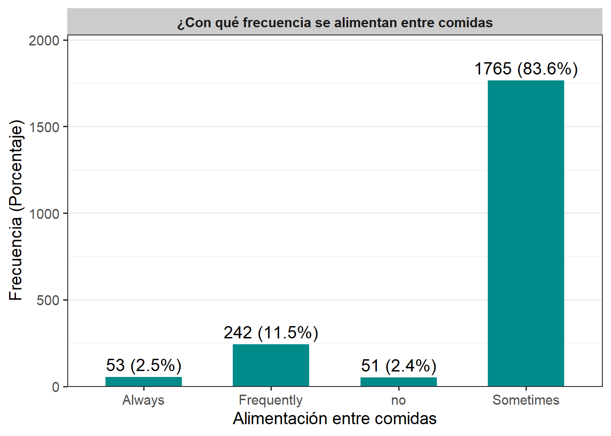
El análisis de la frecuencia con la que los participantes se alimentan fuera de las comidas principales muestra que 1,765 individuos (83.6%) lo hacen ocasionalmente, 242 (11.5%) con frecuencia, 53 (2.5%) siempre y únicamente 51 (2.4%) declaran no hacerlo. Estos resultados revelan que el comportamiento mayoritario consiste en consumir snacks o alimentos adicionales de forma ocasional, lo cual puede considerarse normal si se trata de opciones saludables y controladas. Sin embargo, el 14% de los participantes (frecuente + siempre) mantiene un patrón de alimentación constante entre comidas, lo que puede contribuir a un exceso calórico diario y dificultar el control del peso corporal. El hecho de que solo un 2.4% evite totalmente este hábito evidencia que la gran mayoría de la población estudiada presenta algún grado de ingesta adicional a las comidas principales, lo que podría estar relacionado con dificultades en la regulación del apetito y con un mayor riesgo de incremento de peso a largo plazo.#grafico para SMOKE
tabla_SMOKE_b <- datos %>%
count(SMOKE, name = "Frecuencia") %>%
mutate(Porcentaje = round(Frecuencia / sum(Frecuencia) * 100, 1),
Etiqueta = paste0(Frecuencia, " (", Porcentaje, "%)"))
tabla_SMOKE_b %>%
ggplot(aes(x = SMOKE, y = Frecuencia)) +
geom_col(fill = "#008B8B", width = 0.6) +
geom_text(aes(label = Etiqueta), vjust = -0.5, size = 5) +
facet_wrap(~ "¿FUMAS?") +
scale_y_continuous(expand = expansion(mult = c(0, 0.15))) +
labs(x = "¿Fumas?",
y = "Frecuencia (Porcentaje)") +
theme_bw(base_size = 14) +
theme(
plot.title = element_blank(),
strip.background = element_rect(fill = "gray80", color = NA),
strip.text = element_text(face = "bold"),
panel.grid.major.x = element_blank()
)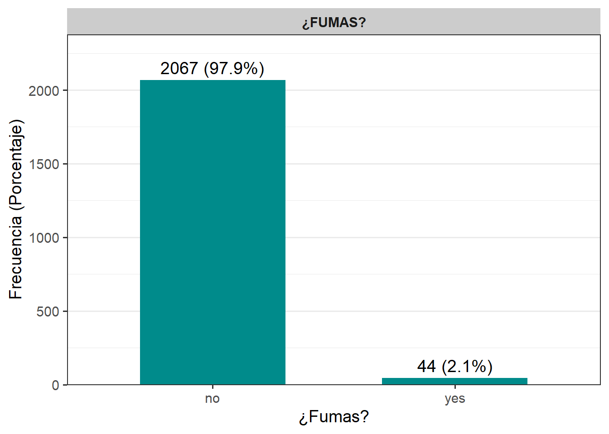
La distribución del hábito tabáquico en la muestra una prevalencia extremadamente baja, con un 97.9% de no fumadores y solo un 2.1% de fumadores. Este patrón es positivo desde la perspectiva de salud pública, ya que sugiere que el tabaquismo no representa un factor de confusión relevante en el análisis de la obesidad. Sin embargo, debido a su baja variabilidad, la variable podría tener un poder predictivo limitado y, en ciertos análisis, podría requerir un tratamiento especial como su agrupación o exclusión.#grafico para SCC
tabla_SCC_b <- datos %>%
count(SCC, name = "Frecuencia") %>%
mutate(Porcentaje = round(Frecuencia / sum(Frecuencia) * 100, 1),
Etiqueta = paste0(Frecuencia, " (", Porcentaje, "%)"))
tabla_SCC_b %>%
ggplot(aes(x = SCC, y = Frecuencia)) +
geom_col(fill = "#008B8B", width = 0.6) +
geom_text(aes(label = Etiqueta), vjust = -0.5, size = 5) +
facet_wrap(~ "¿Monitoreas la cantidad de calorías que consumes al día?") +
scale_y_continuous(expand = expansion(mult = c(0, 0.15))) +
labs(x = "¿Monitoreas Calorías?",
y = "Frecuencia (Porcentaje)") +
theme_bw(base_size = 14) +
theme(
plot.title = element_blank(),
strip.background = element_rect(fill = "gray80", color = NA),
strip.text = element_text(face = "bold"),
panel.grid.major.x = element_blank()
) La gran mayoría de los participantes (95.5%) no realiza un seguimiento de su ingesta calórica diaria, mientras que apenas un 4.5% afirma hacerlo. Este resultado evidencia una falta generalizada de conciencia nutricional y de autocontrol alimentario, lo que es consistente con los altos índices de sobrepeso y obesidad presentes en la muestra. Además, este hallazgo resalta una oportunidad importante para implementar estrategias de educación nutricional que fomenten hábitos de control y monitoreo en la dieta.
La gran mayoría de los participantes (95.5%) no realiza un seguimiento de su ingesta calórica diaria, mientras que apenas un 4.5% afirma hacerlo. Este resultado evidencia una falta generalizada de conciencia nutricional y de autocontrol alimentario, lo que es consistente con los altos índices de sobrepeso y obesidad presentes en la muestra. Además, este hallazgo resalta una oportunidad importante para implementar estrategias de educación nutricional que fomenten hábitos de control y monitoreo en la dieta.
#grafico para CALC
tabla_CALC_b <- datos %>%
count(CALC, name = "Frecuencia") %>%
mutate(Porcentaje = round(Frecuencia / sum(Frecuencia) * 100, 1),
Etiqueta = paste0(Frecuencia, " (", Porcentaje, "%)"))
tabla_CALC_b %>%
ggplot(aes(x = CALC, y = Frecuencia)) +
geom_col(fill = "#008B8B", width = 0.6) +
geom_text(aes(label = Etiqueta), vjust = -0.5, size = 5) +
facet_wrap(~ "¿Con qué frecuencia consumes alcohol?") +
scale_y_continuous(expand = expansion(mult = c(0, 0.15))) +
labs(x = "Frecuencia consumo de alcohol",
y = "Frecuencia (Porcentaje)") +
theme_bw(base_size = 14) +
theme(
plot.title = element_blank(),
strip.background = element_rect(fill = "gray80", color = NA),
strip.text = element_text(face = "bold"),
panel.grid.major.x = element_blank()
)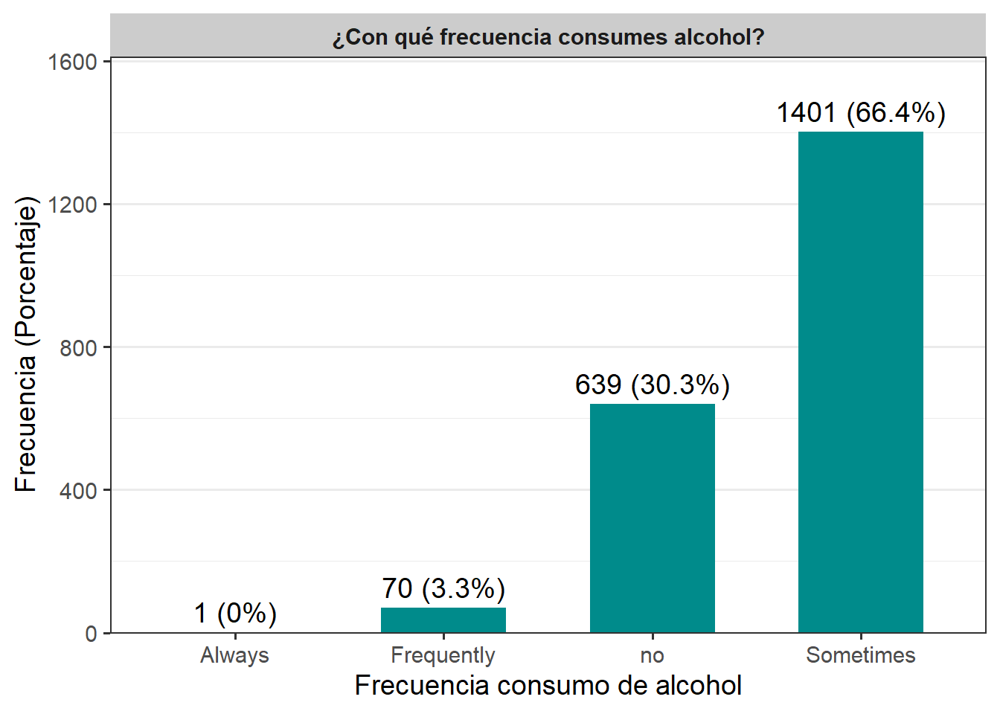
El consumo de alcohol se concentra principalmente en un patrón ocasional, reportado por el 66.4% de los participantes, seguido por un 30.3% que afirma no consumirlo. El consumo frecuente es relativamente bajo (3.3%) y el consumo diario es casi inexistente. Esta distribución sugiere que, aunque el aporte calórico del alcohol podría no ser el factor principal asociado al sobrepeso, su consumo ocasional puede contribuir al balance energético, y su variabilidad podría aportar valor en análisis predictivos.#grafico para MTRANS
tabla_MTRANS_b <- datos %>%
count(MTRANS, name = "Frecuencia") %>%
mutate(Porcentaje = round(Frecuencia / sum(Frecuencia) * 100, 1),
Etiqueta = paste0(Frecuencia, " (", Porcentaje, "%)"))
tabla_MTRANS_b %>%
ggplot(aes(x = MTRANS, y = Frecuencia)) +
geom_col(fill = "#008B8B", width = 0.6) +
geom_text(aes(label = Etiqueta), vjust = -0.5, size = 5) +
facet_wrap(~ "¿Qué medio de transporte utilizas?") +
scale_y_continuous(expand = expansion(mult = c(0, 0.15))) +
labs(x = "Medio de transporte",
y = "Frecuencia (Porcentaje)") +
theme_bw(base_size = 14) +
theme(
plot.title = element_blank(),
strip.background = element_rect(fill = "gray80", color = NA),
strip.text = element_text(face = "bold"),
panel.grid.major.x = element_blank()
)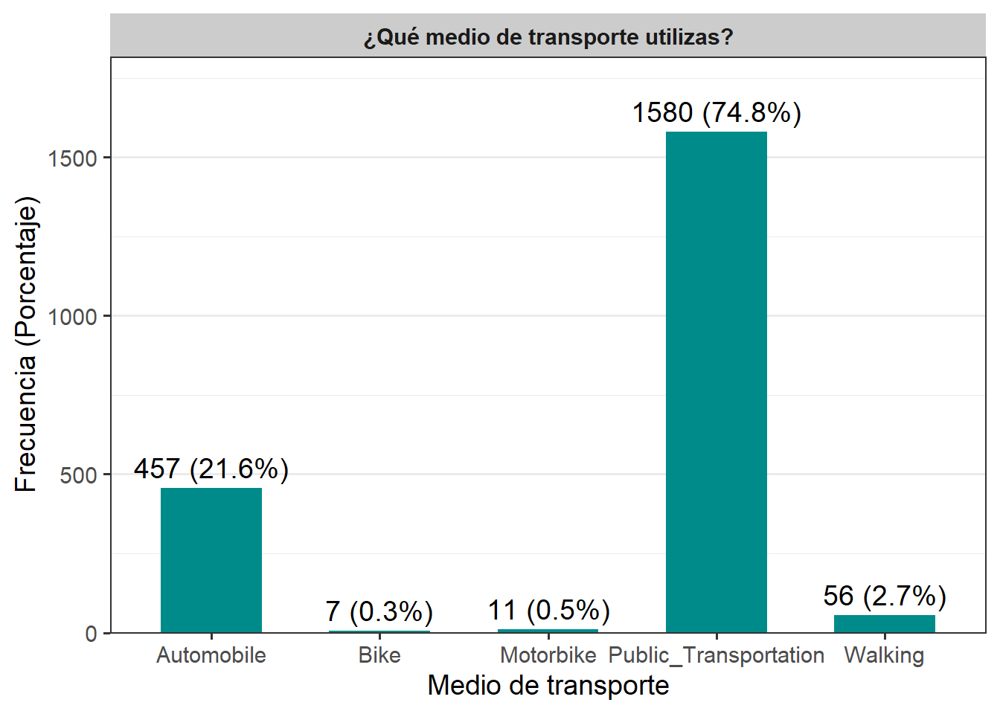
El análisis de los medios de transporte revela que el 96.4% de los participantes utiliza opciones pasivas como el transporte público (74.8%) o el automóvil (21.6%), mientras que solo un 3.5% emplea medios activos como caminar, bicicleta o motocicleta. Este patrón refleja un estilo de vida predominantemente sedentario y pone de manifiesto oportunidades perdidas para incorporar actividad física en la rutina diaria, posiblemente influenciado por un contexto urbano con infraestructuras centradas en el transporte motorizado.3.5 Análisis exploratorio bivariado (NObeyesdad vs var.numérica)
Realizaremos la comparacion de la variable NObeyesdad con respecto a cada una de las variables numéricas independientes.
# Diagrama boxplot: NObeyesdad vs Age
datos %>%
ggplot(aes(x = factor(NObeyesdad), y = Age)) +
geom_boxplot(fill = "#1E90FF", alpha = 0.6, color = "black") +
stat_summary(fun = mean, geom = "point", shape = 20, size = 3, color = "red") +
labs(
title = "Distribución de la edad según el tipo de obesidad",
x = "¿Qué tipo de obesidad presenta? (NObeyesdad)",
y = "Edad del encuestado"
) +
theme_bw() +
theme(
plot.title = element_text(hjust = 0.5),
strip.background = element_rect(fill = "gray90", color = NA),
strip.text = element_text(face = "bold")
) Los datos muestran que las edades más bajas corresponden a los grupos de peso insuficiente y peso normal, con medianas cercanas a los 20 años, mientras que los casos de obesidad I, II y III presentan edades medias más elevadas, entre 25 y 30 años. Los grupos de sobrepeso se ubican en un rango intermedio-alto, con medianas de 25 a 27 años. En general, se aprecia una tendencia en la que la edad promedio aumenta junto con la severidad del exceso de peso, y la presencia de valores atípicos es más frecuente en los grupos con obesidad, lo que evidencia mayor variabilidad etaria en estos casos.
Los datos muestran que las edades más bajas corresponden a los grupos de peso insuficiente y peso normal, con medianas cercanas a los 20 años, mientras que los casos de obesidad I, II y III presentan edades medias más elevadas, entre 25 y 30 años. Los grupos de sobrepeso se ubican en un rango intermedio-alto, con medianas de 25 a 27 años. En general, se aprecia una tendencia en la que la edad promedio aumenta junto con la severidad del exceso de peso, y la presencia de valores atípicos es más frecuente en los grupos con obesidad, lo que evidencia mayor variabilidad etaria en estos casos.
# Diagrama boxplot: NObeyesdad vs Height
datos %>%
ggplot(aes(x = factor(NObeyesdad), y = Height)) +
geom_boxplot(fill = "#1E90FF", alpha = 0.6, color = "black") +
stat_summary(fun = mean, geom = "point", shape = 20, size = 3, color = "red") +
labs(
title = "Distribución de la altura según la respuesta del encuestado",
x = "¿Qué tipo de obesidad presenta? (NObeyesdad)",
y = "Estatura del encuestado"
) +
theme_bw() +
theme(
plot.title = element_text(hjust = 0.5),
strip.background = element_rect(fill = "gray90", color = NA),
strip.text = element_text(face = "bold")
)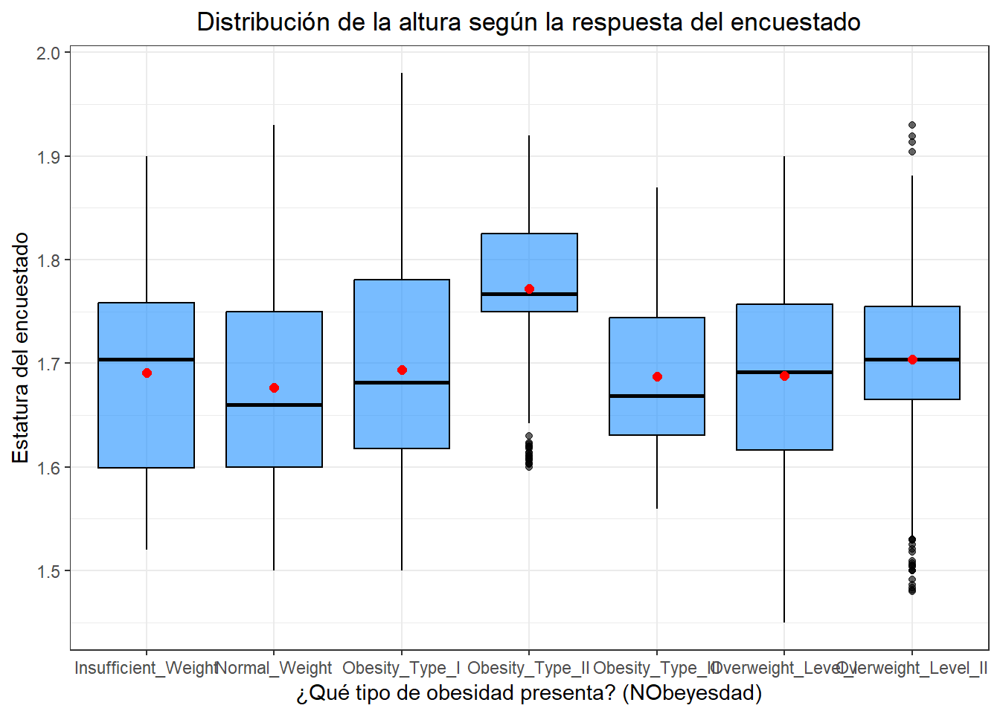
La estatura se mantiene relativamente homogénea en todos los grupos de peso, con medianas que oscilan entre 1.67 y 1.77 metros, y rangos intercuartílicos similares. Los casos de obesidad tipo II muestran una ligera inclinación hacia estaturas mayores, aunque la diferencia no es sustancial. En conjunto, no se detecta una relación evidente entre la altura y el tipo de obesidad, lo que sugiere que, en esta muestra, la clasificación del peso no está influida de forma significativa por la estatura.# Diagrama boxplot: NObeyesdad vs Weight
datos %>%
ggplot(aes(x = factor(NObeyesdad), y = Weight)) +
geom_boxplot(fill = "#1E90FF", alpha = 0.6, color = "black") +
stat_summary(fun = mean, geom = "point", shape = 20, size = 3, color = "red") +
labs(
title = "Distribución de la altura según la respuesta del encuestado",
x = "¿Qué tipo de obesidad presenta? (NObeyesdad)",
y = "Peso del encuestado"
) +
theme_bw() +
theme(
plot.title = element_text(hjust = 0.5),
strip.background = element_rect(fill = "gray90", color = NA),
strip.text = element_text(face = "bold")
)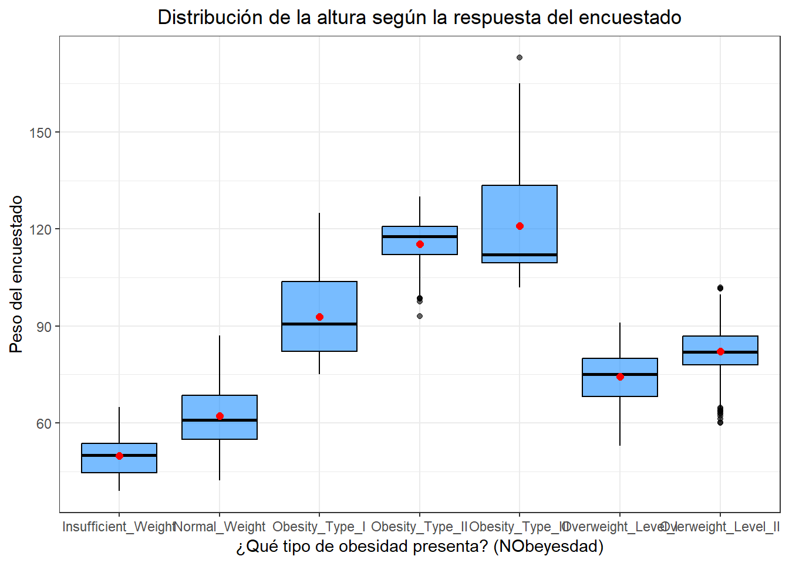
Se observa un patrón progresivo claro: a mayor severidad de obesidad, mayor es el peso corporal. El grupo con peso insuficiente presenta la mediana más baja, cercana a los 52 kg, seguido del peso normal, centrado en torno a los 60 kg. Los tipos de obesidad I, II y III muestran incrementos marcados, con medianas aproximadas de 90, 115 y 120 kg, respectivamente, mientras que los grupos de sobrepeso ocupan posiciones intermedias. Esta progresión confirma la coherencia y validez de la clasificación utilizada en el estudio.# Diagrama boxplot: NObeyesdad vs FCVC
datos %>%
ggplot(aes(x = factor(NObeyesdad), y = FCVC)) +
geom_boxplot(fill = "#1E90FF", alpha = 0.6, color = "black") +
stat_summary(fun = mean, geom = "point", shape = 20, size = 3, color = "red") +
labs(
title = "Distribución del consumo de vegetales según la respuesta del encuestado",
x = "¿Qué tipo de obesidad presenta? (NObeyesdad)",
y = "Consumo de vegetales del encuestado"
) +
theme_bw() +
theme(
plot.title = element_text(hjust = 0.5),
strip.background = element_rect(fill = "gray90", color = NA),
strip.text = element_text(face = "bold")
) El consumo de vegetales es mayor en los grupos de peso insuficiente y peso normal, con medianas de 2.5 a 3 porciones diarias, mientras que los grupos con obesidad, en sus tres niveles, reportan consumos menores, de 2.0 a 2.5 porciones. Los casos de sobrepeso se sitúan en un punto intermedio. La tendencia general es inversa: conforme aumenta la severidad del exceso de peso, disminuye la ingesta de vegetales, lo que sugiere una asociación entre hábitos alimentarios más saludables y un mejor control del peso corporal.
El consumo de vegetales es mayor en los grupos de peso insuficiente y peso normal, con medianas de 2.5 a 3 porciones diarias, mientras que los grupos con obesidad, en sus tres niveles, reportan consumos menores, de 2.0 a 2.5 porciones. Los casos de sobrepeso se sitúan en un punto intermedio. La tendencia general es inversa: conforme aumenta la severidad del exceso de peso, disminuye la ingesta de vegetales, lo que sugiere una asociación entre hábitos alimentarios más saludables y un mejor control del peso corporal.
# Diagrama boxplot: NObeyesdad vs NCP
datos %>%
ggplot(aes(x = factor(NObeyesdad), y = NCP)) +
geom_boxplot(fill = "#1E90FF", alpha = 0.6, color = "black") +
stat_summary(fun = mean, geom = "point", shape = 20, size = 3, color = "red") +
labs(
title = "Distribución de laS Comidas consumidas según la respuesta del encuestado",
x = "¿Qué tipo de obesidad presenta? (NObeyesdad)",
y = "Número de comidas que consume el encuestado"
) +
theme_bw() +
theme(
plot.title = element_text(hjust = 0.5),
strip.background = element_rect(fill = "gray90", color = NA),
strip.text = element_text(face = "bold")
)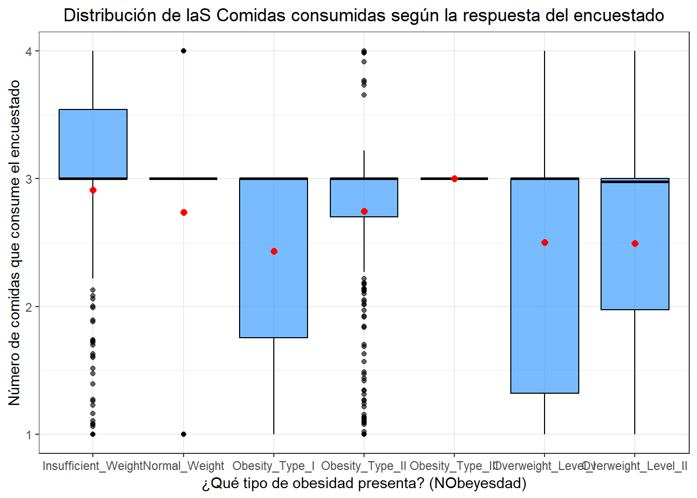
El número de comidas diarias presenta gran variabilidad en todos los grupos, siendo más amplia en el caso del peso insuficiente. La mayoría de los individuos con peso normal, sobrepeso u obesidad consume entre 2 y 3 comidas principales al día, con medianas que rondan las 2.5-3 comidas. No se observa una relación clara entre el número de comidas y el tipo de obesidad, lo que indica que este factor, de manera aislada, no es determinante en la clasificación del peso.# Diagrama boxplot: NObeyesdad vs CH2O
datos %>%
ggplot(aes(x = factor(NObeyesdad), y = CH2O)) +
geom_boxplot(fill = "#1E90FF", alpha = 0.6, color = "black") +
stat_summary(fun = mean, geom = "point", shape = 20, size = 3, color = "red") +
labs(
title = "Distribución del consumo de agua según la respuesta del encuestado",
x = "¿Qué tipo de obesidad presenta? (NObeyesdad)",
y = "Litros de agua que consume el encuestado"
) +
theme_bw() +
theme(
plot.title = element_text(hjust = 0.5),
strip.background = element_rect(fill = "gray90", color = NA),
strip.text = element_text(face = "bold")
) El consumo de agua es más alto en los grupos con obesidad tipo I y III, con medianas de 2.0 a 2.4 litros diarios, mientras que las personas con peso insuficiente y normal presentan valores ligeramente menores, cercanos a 1.8-2.0 litros. Los casos de sobrepeso se sitúan en un nivel intermedio. Contrario a lo que podría suponerse, no se aprecia una relación inversa entre el grado de obesidad y el consumo de agua; de hecho, algunos grupos con obesidad reportan mayor ingesta, lo que sugiere que esta variable, por sí sola, no discrimina de forma significativa entre los tipos de obesidad.
El consumo de agua es más alto en los grupos con obesidad tipo I y III, con medianas de 2.0 a 2.4 litros diarios, mientras que las personas con peso insuficiente y normal presentan valores ligeramente menores, cercanos a 1.8-2.0 litros. Los casos de sobrepeso se sitúan en un nivel intermedio. Contrario a lo que podría suponerse, no se aprecia una relación inversa entre el grado de obesidad y el consumo de agua; de hecho, algunos grupos con obesidad reportan mayor ingesta, lo que sugiere que esta variable, por sí sola, no discrimina de forma significativa entre los tipos de obesidad.
# Diagrama boxplot: NObeyesdad vs FAF
datos %>%
ggplot(aes(x = factor(NObeyesdad), y = FAF)) +
geom_boxplot(fill = "#1E90FF", alpha = 0.6, color = "black") +
stat_summary(fun = mean, geom = "point", shape = 20, size = 3, color = "red") +
labs(
title = "Distribución de la actividad física según la respuesta del encuestado",
x = "¿Qué tipo de obesidad presenta? (NObeyesdad)",
y = "Cuantas veces hace actividad física el encuestado"
) +
theme_bw() +
theme(
plot.title = element_text(hjust = 0.5),
strip.background = element_rect(fill = "gray90", color = NA),
strip.text = element_text(face = "bold")
)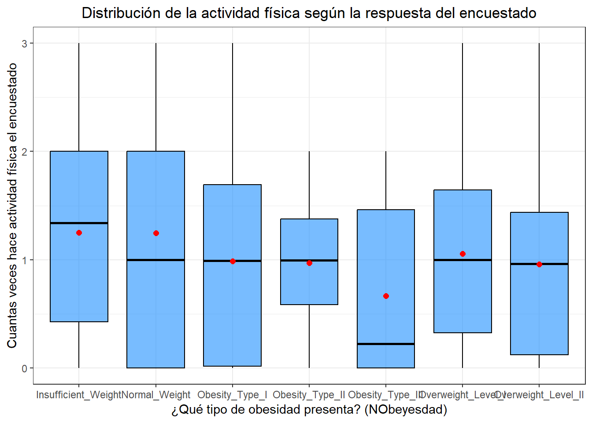
Los niveles más altos de actividad física se observan en individuos con peso insuficiente y normal, con medianas de 1.2-1.3 en la escala medida, mientras que los grupos con obesidad, en sus tres niveles, muestran valores consistentemente más bajos, cercanos a 1.0. Los grupos con sobrepeso ocupan una posición intermedia. Esta tendencia inversa, donde mayor severidad del exceso de peso se asocia con menor actividad física, refuerza la relevancia de este hábito como factor protector frente al desarrollo de obesidad.# Diagrama boxplot: NObeyesdad vs TUE
datos %>%
ggplot(aes(x = factor(NObeyesdad), y = TUE)) +
geom_boxplot(fill = "#1E90FF", alpha = 0.6, color = "black") +
stat_summary(fun = mean, geom = "point", shape = 20, size = 3, color = "red") +
labs(
title = "Distribución del uso de aparatos electrónicos según la respuesta del encuestado",
x = "¿Qué tipo de obesidad presenta? (NObeyesdad)",
y = "Tiempo de utilización de dispositivos tecnológicos"
) +
theme_bw() +
theme(
plot.title = element_text(hjust = 0.5),
strip.background = element_rect(fill = "gray90", color = NA),
strip.text = element_text(face = "bold"))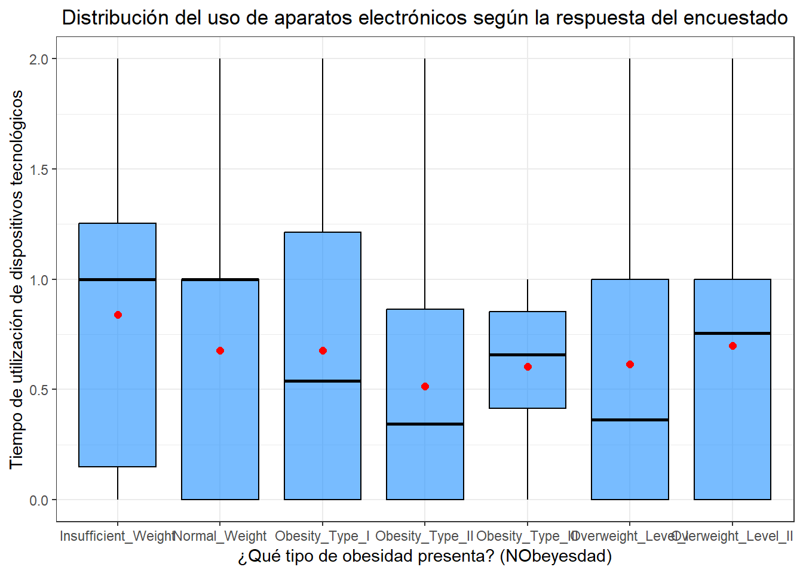
El uso de dispositivos electrónicos presenta patrones similares en todos los grupos, con medianas entre 0.5 y 1.0 en la escala registrada. Las personas con peso insuficiente muestran una ligera inclinación hacia un mayor uso, mientras que en obesidad tipo II y III las medianas son algo menores. La variabilidad es alta en todos los casos, lo que indica diversidad en los hábitos tecnológicos, y no se evidencia una relación consistente entre el tiempo de uso de aparatos electrónicos y el tipo de obesidad.- Comparación de las variables numéricas independientes con respecto a la variable NObeyesdad
# Agrupación por 'NObeyesdad'
Age_NObeyesdad <- datos %>%
group_by(NObeyesdad) %>%
summarise(n = length(Age),
media = mean(Age),
ds = sd(Age),
mediana = median(Age),
minimo = min(Age),
maximo = max(Age),
Q1 = quantile(Age, 0.25),
Q3 = quantile(Age, 0.75),
IQR = IQR(Age)) %>%
mutate(variable = "Age", niveles = as.character(NObeyesdad)) %>%
select(variable, niveles, everything(), -NObeyesdad)
Height_NObeyesdad <- datos %>%
group_by(NObeyesdad) %>%
summarise(n = length(Height),
media = mean(Height),
ds = sd(Height),
mediana = median(Height),
minimo = min(Height),
maximo = max(Height),
Q1 = quantile(Height, 0.25),
Q3 = quantile(Height, 0.75),
IQR = IQR(Height)) %>%
mutate(variable = "Height", niveles = as.character(NObeyesdad)) %>%
select(variable, niveles, everything(), -NObeyesdad)
Weight_NObeyesdad <- datos %>%
group_by(NObeyesdad) %>%
summarise(n = length(Weight),
media = mean(Weight),
ds = sd(Weight),
mediana = median(Weight),
minimo = min(Weight),
maximo = max(Weight),
Q1 = quantile(Weight, 0.25),
Q3 = quantile(Weight, 0.75),
IQR = IQR(Weight)) %>%
mutate(variable = "Weight", niveles = as.character(NObeyesdad)) %>%
select(variable, niveles, everything(), -NObeyesdad)
FCVC_NObeyesdad <- datos %>%
group_by(NObeyesdad) %>%
summarise(n = length(FCVC),
media = mean(FCVC),
ds = sd(FCVC),
mediana = median(FCVC),
minimo = min(FCVC),
maximo = max(FCVC),
Q1 = quantile(FCVC, 0.25),
Q3 = quantile(FCVC, 0.75),
IQR = IQR(FCVC)) %>%
mutate(variable = "FCVC", niveles = as.character(NObeyesdad)) %>%
select(variable, niveles, everything(), -NObeyesdad)
NCP_NObeyesdad <- datos %>%
group_by(NObeyesdad) %>%
summarise(n = length(NCP),
media = mean(NCP),
ds = sd(NCP),
mediana = median(NCP),
minimo = min(NCP),
maximo = max(NCP),
Q1 = quantile(NCP, 0.25),
Q3 = quantile(NCP, 0.75),
IQR = IQR(NCP)) %>%
mutate(variable = "NCP", niveles = as.character(NObeyesdad)) %>%
select(variable, niveles, everything(), -NObeyesdad)
CH2O_NObeyesdad <- datos %>%
group_by(NObeyesdad) %>%
summarise(n = length(CH2O),
media = mean(CH2O),
ds = sd(CH2O),
mediana = median(CH2O),
minimo = min(CH2O),
maximo = max(CH2O),
Q1 = quantile(CH2O, 0.25),
Q3 = quantile(CH2O, 0.75),
IQR = IQR(CH2O)) %>%
mutate(variable = "CH2O", niveles = as.character(NObeyesdad)) %>%
select(variable, niveles, everything(), -NObeyesdad)
FAF_NObeyesdad <- datos %>%
group_by(NObeyesdad) %>%
summarise(n = length(FAF),
media = mean(FAF),
ds = sd(FAF),
mediana = median(FAF),
minimo = min(FAF),
maximo = max(FAF),
Q1 = quantile(FAF, 0.25),
Q3 = quantile(FAF, 0.75),
IQR = IQR(FAF)) %>%
mutate(variable = "FAF", niveles = as.character(NObeyesdad)) %>%
select(variable, niveles, everything(), -NObeyesdad)
TUE_NObeyesdad <- datos %>%
group_by(NObeyesdad) %>%
summarise(n = length(TUE),
media = mean(TUE),
ds = sd(TUE),
mediana = median(TUE),
minimo = min(TUE),
maximo = max(TUE),
Q1 = quantile(TUE, 0.25),
Q3 = quantile(TUE, 0.75),
IQR = IQR(TUE)) %>%
mutate(variable = "TUE", niveles = as.character(NObeyesdad)) %>%
select(variable, niveles, everything(), -NObeyesdad)
#Unión de las tablas
bind_rows(Age_NObeyesdad, Height_NObeyesdad, Weight_NObeyesdad, FCVC_NObeyesdad, NCP_NObeyesdad, CH2O_NObeyesdad, FAF_NObeyesdad, TUE_NObeyesdad)## # A tibble: 56 × 11
## variable niveles n media ds mediana
## <chr> <chr> <int> <dbl> <dbl> <dbl>
## 1 Age Insuffici… 272 19.8 2.67 19.2
## 2 Age Normal_We… 287 21.7 5.10 21
## 3 Age Obesity_T… 351 25.9 7.76 23.0
## 4 Age Obesity_T… 297 28.2 4.87 27.2
## 5 Age Obesity_T… 324 23.5 2.76 25.4
## 6 Age Overweigh… 290 23.4 6.13 21.0
## 7 Age Overweigh… 290 27.0 8.06 24
## 8 Height Insuffici… 272 1.69 0.0997 1.70
## 9 Height Normal_We… 287 1.68 0.0945 1.66
## 10 Height Obesity_T… 351 1.69 0.0984 1.68
## # ℹ 46 more rows
## # ℹ 5 more variables: minimo <dbl>,
## # maximo <dbl>, Q1 <dbl>, Q3 <dbl>, IQR <dbl>La tabla confirma tendencias ya observadas en las gráficas: la edad media aumenta progresivamente desde peso insuficiente (19.8 años) hasta obesidad tipo II (28.2 años), mientras que la estatura permanece prácticamente constante entre grupos (1.68-1.69 metros), lo que confirma su escasa influencia en la clasificación. En cuanto a los datos de peso, la progresión esperada respalda la coherencia de la categorización. Las desviaciones estándar reflejan mayor variabilidad en edad y peso, lo que indica heterogeneidad dentro de cada grupo.
3.6 Análisis exploratorio bivariado (NObeyesdad vs var.categórica)
Realizaremos la comparacion de la variable NObeyesdad con respecto a cada una de las variables categóricas independientes.
- Gráficas bivariadas (NObeyesdad vs var.cat.)
datos_plot_gender <- datos %>%
group_by(NObeyesdad) %>%
count(Gender, name = "n") %>%
mutate(categoria = Gender,
variable = "Gender",
porcentaje = (n / sum(n)) * 100) %>%
select(NObeyesdad, categoria, n, porcentaje)
datos_plot_gender %>%
ggplot(aes(x = categoria, y = n, fill = NObeyesdad)) +
geom_bar(stat = "identity", position = position_dodge(width = 0.9)) +
geom_text(aes(label = paste0(n, " (", round(porcentaje, 1), "%)")),
position = position_dodge(width = 0.9),
vjust = -0.3,
size = 3) +
labs(title = "Género del encuestado (Gender)",
x = "Género del encuestado (Gender)",
y = "Tipo de obesidad del encuestado"
) +
theme_bw() +
scale_fill_brewer(palette = "Set1")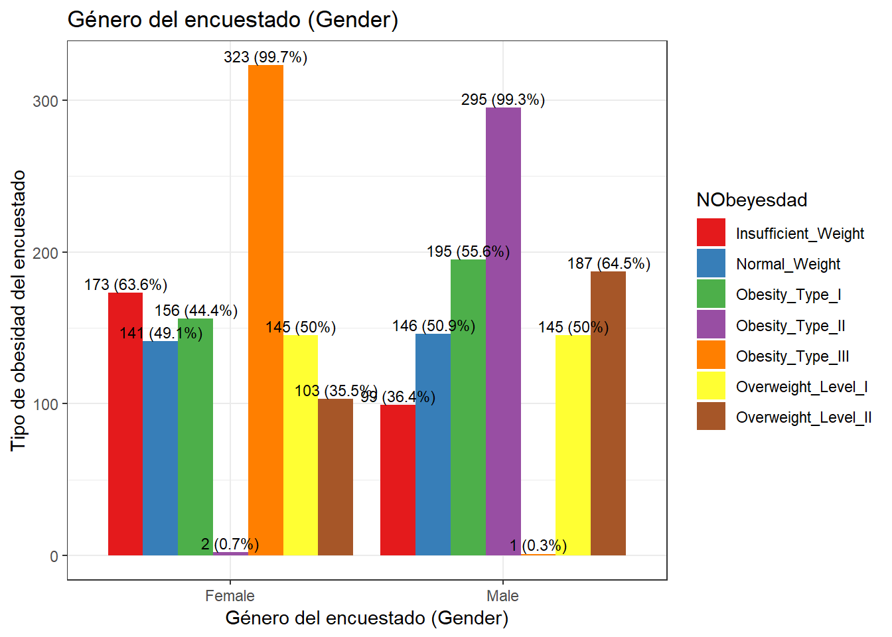
La distribución por género en la muestra un ligero predominio femenino (52% mujeres frente a 48% hombres), con una diferencia marcada en el grupo de peso insuficiente, donde las mujeres representan el 63.6%. En los grupos de peso normal, sobrepeso y obesidad, la proporción entre géneros es más equilibrada, aunque la predominancia femenina en los extremos de la distribución sugiere que el género podría influir en ciertos patrones de peso corporal.datos_plot_fhwo <- datos %>%
group_by(NObeyesdad) %>%
count(family_history_with_overweight, name = "n") %>%
mutate(categoria = family_history_with_overweight,
variable = "family_history_with_overweight",
porcentaje = (n / sum(n)) * 100) %>%
select(NObeyesdad, categoria, n, porcentaje)
datos_plot_fhwo %>%
ggplot(aes(x = categoria, y = n, fill = NObeyesdad)) +
geom_bar(stat = "identity", position = position_dodge(width = 0.9)) +
geom_text(aes(label = paste0(n, " (", round(porcentaje, 1), "%)")),
position = position_dodge(width = 0.9),
vjust = -0.3,
size = 3) +
labs(title = "Antecedentes de sobrepeso en la familia (family_history_with_overweight)",
x = "Antecedentes familirias en sobrepeso (family_history_with_overweight)",
y = "Tipo de obesidad del encuestado"
) +
theme_bw() +
scale_fill_brewer(palette = "Set1") 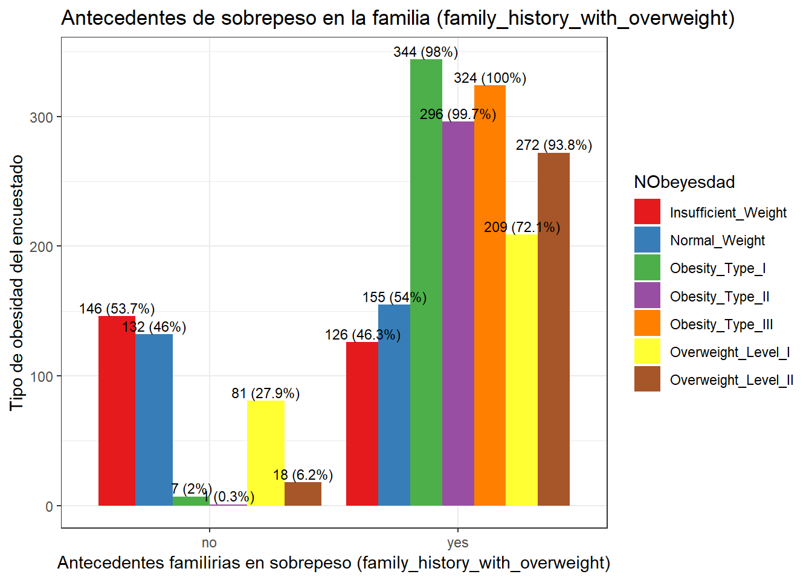
Se observa una asociación clara entre antecedentes familiares de sobrepeso y mayor prevalencia de obesidad. Las personas sin antecedentes se concentran principalmente en peso insuficiente y normal, mientras que quienes sí los tienen muestran porcentajes cercanos al 100% en obesidad tipo II y III, y muy altos en obesidad tipo I. Esto sugiere que los factores genéticos y/o ambientales familiares juegan un papel importante en el desarrollo del exceso de peso.datos_plot_FAVC <- datos %>%
group_by(NObeyesdad) %>%
count(FAVC, name = "n") %>%
mutate(categoria = FAVC,
variable = "FAVC",
porcentaje = (n / sum(n)) * 100) %>%
select(NObeyesdad, categoria, n, porcentaje)
datos_plot_FAVC %>%
ggplot(aes(x = categoria, y = n, fill = NObeyesdad)) +
geom_bar(stat = "identity", position = position_dodge(width = 0.9)) +
geom_text(aes(label = paste0(n, " (", round(porcentaje, 1), "%)")),
position = position_dodge(width = 0.9),
vjust = -0.3,
size = 3) +
labs(title = "Consumo de alimentos con alto nivel de calorias (FAVC)",
x = "Alimentos con altas calorías (FAVC)",
y = "Tipo de obesidad del encuestado"
) +
theme_bw() +
scale_fill_brewer(palette = "Set1") 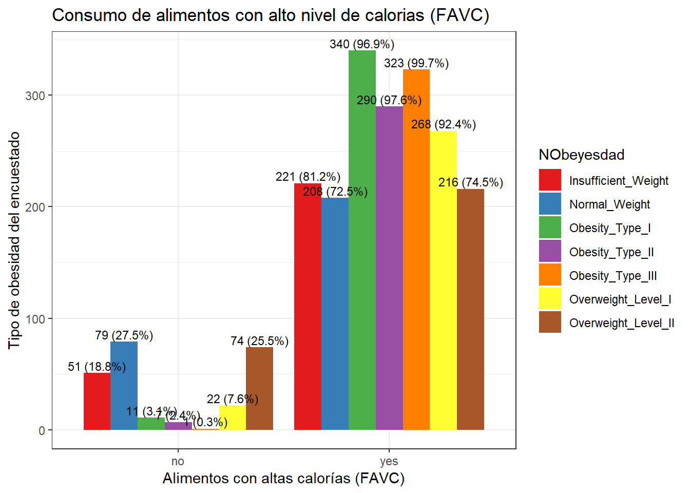
El consumo de alimentos hipercalóricos se asocia fuertemente con las categorías de sobrepeso y obesidad. Quienes no los consumen tienden a encontrarse en peso insuficiente o normal, mientras que entre los consumidores se alcanzan porcentajes cercanos al 100% en obesidad tipo II y muy altos en obesidad tipo I y III. Esto posiciona al consumo frecuente de este tipo de alimentos como un factor de riesgo clave para el aumento de peso.datos_plot_CAEC <- datos %>%
group_by(NObeyesdad) %>%
count(CAEC, name = "n") %>%
mutate(categoria = CAEC,
variable = "CAEC",
porcentaje = (n / sum(n)) * 100) %>%
select(NObeyesdad, categoria, n, porcentaje)
datos_plot_CAEC %>%
ggplot(aes(x = categoria, y = n, fill = NObeyesdad)) +
geom_bar(stat = "identity", position = position_dodge(width = 0.9)) +
geom_text(aes(label = paste0(n, " (", round(porcentaje, 1), "%)")),
position = position_dodge(width = 0.9),
vjust = -0.3,
size = 3) +
labs(title = "Consumo de alimento entre comidas (CAEC)",
x = "ALimentos entre comidas (CAEC)",
y = "Tipo de obesidad del encuestado"
) +
theme_bw() +
scale_fill_brewer(palette = "Set1") 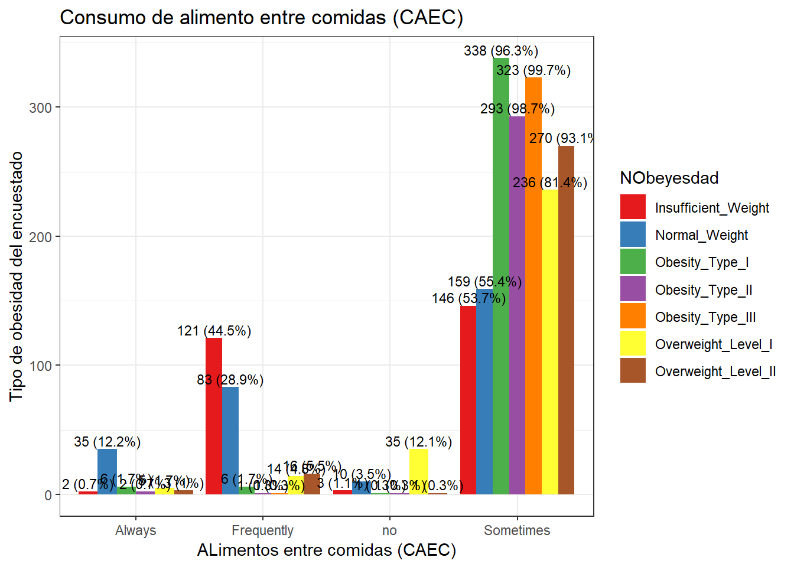
El hábito de comer entre comidas se relaciona con mayor presencia de sobrepeso y obesidad, especialmente en quienes lo hacen “frecuentemente” o “a veces”. Por el contrario, quienes nunca consumen alimentos entre comidas se concentran en peso insuficiente y normal. Aunque el patrón no es completamente uniforme, los datos respaldan la influencia de los hábitos alimenticios irregulares en la acumulación de peso.datos_plot_SMOKE <- datos %>%
group_by(NObeyesdad) %>%
count(SMOKE, name = "n") %>%
mutate(categoria = SMOKE,
variable = "SMOKE",
porcentaje = (n / sum(n)) * 100) %>%
select(NObeyesdad, categoria, n, porcentaje)
datos_plot_SMOKE %>%
ggplot(aes(x = categoria, y = n, fill = NObeyesdad)) +
geom_bar(stat = "identity", position = position_dodge(width = 0.9)) +
geom_text(aes(label = paste0(n, " (", round(porcentaje, 1), "%)")),
position = position_dodge(width = 0.9),
vjust = -0.3,
size = 3) +
labs(title = "¿FUMAS? (SMOKE)",
x = "¿FUMAS? (SMOKE)",
y = "Tipo de obesidad del encuestado"
) +
theme_bw() +
scale_fill_brewer(palette = "Set1") 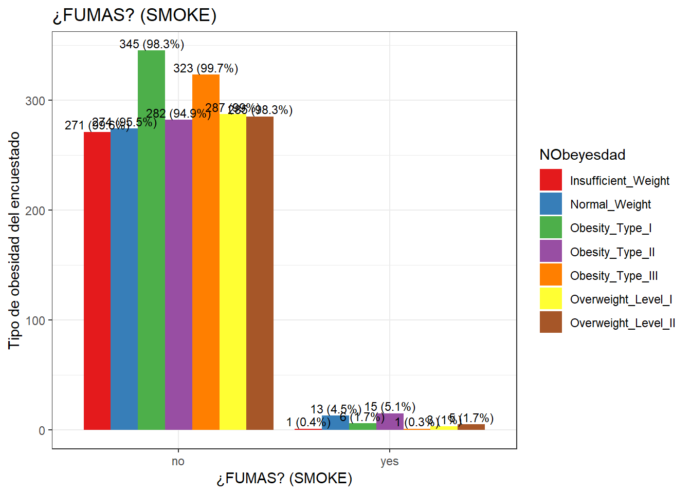
El tabaquismo presenta una prevalencia muy baja en la muestra (entre 1% y 7% por grupo), con la mayoría de los participantes no fumadores en todas las categorías de peso. No se detectan diferencias significativas en la distribución del hábito de fumar entre los distintos tipos de obesidad, lo que indica que en esta población el tabaquismo no actúa como un factor diferenciador relevante en la clasificación del peso.datos_plot_SCC <- datos %>%
group_by(NObeyesdad) %>%
count(SCC, name = "n") %>%
mutate(categoria = SCC,
variable = "SCC",
porcentaje = (n / sum(n)) * 100) %>%
select(NObeyesdad, categoria, n, porcentaje)
datos_plot_SCC %>%
ggplot(aes(x = categoria, y = n, fill = NObeyesdad)) +
geom_bar(stat = "identity", position = position_dodge(width = 0.9)) +
geom_text(aes(label = paste0(n, " (", round(porcentaje, 1), "%)")),
position = position_dodge(width = 0.9),
vjust = -0.3,
size = 3) +
labs(title = "Monitoreo diario de calorías (SCC)",
x = "¿Monitoreas tus calorías diariamente? (SCC)",
y = "Tipo de obesidad del encuestado"
) +
theme_bw() +
scale_fill_brewer(palette = "Set1") 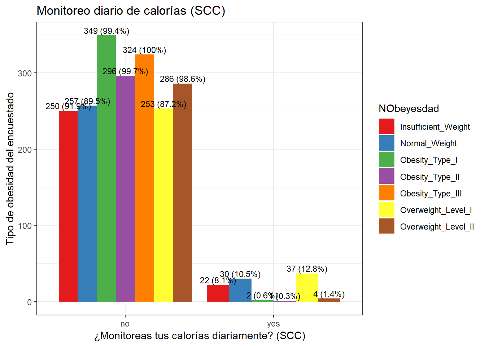
En todos los grupos, la gran mayoría de personas no realiza un seguimiento diario de su ingesta calórica, con porcentajes que oscilan entre el 87% y el 99%. Solo una fracción pequeña practica este hábito, siendo más frecuente en peso insuficiente (10.5%) y peso normal (12.8%), y prácticamente inexistente en obesidad tipo III (1.4%). La tendencia general indica que, a mayor severidad de la obesidad, menor es la probabilidad de monitorear las calorías, lo que sugiere que la falta de control o conciencia sobre la ingesta energética podría estar asociada con el exceso de peso.datos_plot_CALC <- datos %>%
group_by(NObeyesdad) %>%
count(CALC, name = "n") %>%
mutate(categoria = CALC,
variable = "CALC",
porcentaje = (n / sum(n)) * 100) %>%
select(NObeyesdad, categoria, n, porcentaje)
datos_plot_CALC %>%
ggplot(aes(x = categoria, y = n, fill = NObeyesdad)) +
geom_bar(stat = "identity", position = position_dodge(width = 0.9)) +
geom_text(aes(label = paste0(n, " (", round(porcentaje, 1), "%)")),
position = position_dodge(width = 0.9),
vjust = -0.3,
size = 3) +
labs(title = "Frecuencia de consumo de alcohol (CALC)",
x = "Frecuencia de consumo de alcohol (CALC)",
y = "Tipo de obesidad del encuestado"
) +
theme_bw() +
scale_fill_brewer(palette = "Set1") 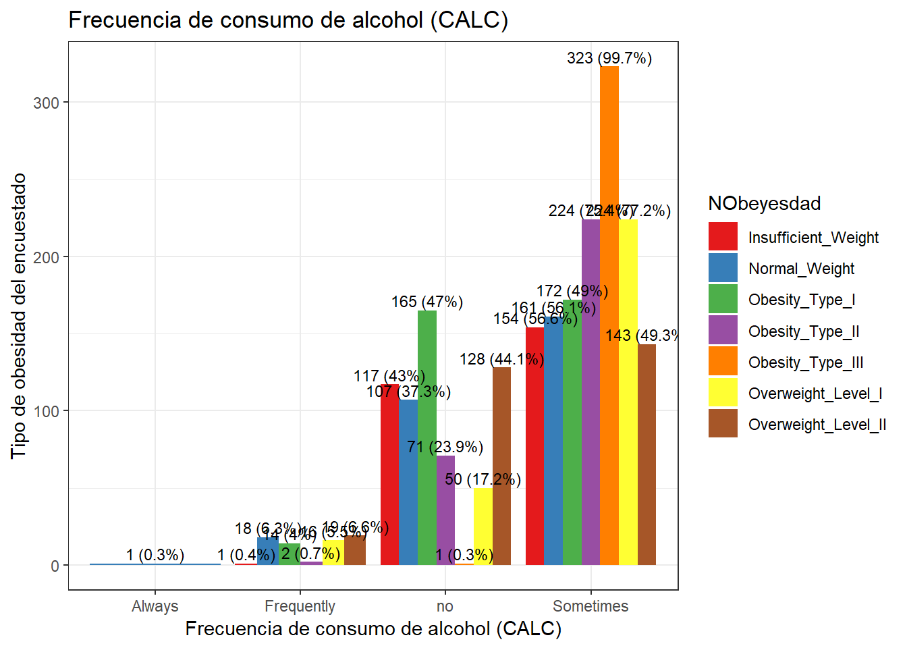
El patrón predominante en todos los grupos es el consumo de alcohol “a veces”, con proporciones que van del 49% al 97%. Las personas con peso insuficiente y normal presentan mayor diversidad en sus hábitos, incluyendo una proporción considerable de no consumidores (43-47%). En contraste, los grupos con obesidad se concentran casi exclusivamente en la categoría “a veces” y muestran muy pocos abstemios, mientras que el consumo frecuente de alcohol es bajo en todos los grupos, situándose por debajo del 10%. No se evidencia una relación directa entre la frecuencia de consumo de alcohol y el tipo de obesidad, aunque la variabilidad es mayor en quienes tienen peso normal.datos_plot_MTRANS <- datos %>%
group_by(NObeyesdad) %>%
count(MTRANS, name = "n") %>%
mutate(categoria = MTRANS,
variable = "MTRANS",
porcentaje = (n / sum(n)) * 100) %>%
select(NObeyesdad, categoria, n, porcentaje)
datos_plot_MTRANS %>%
ggplot(aes(x = categoria, y = n, fill = NObeyesdad)) +
geom_bar(stat = "identity", position = position_dodge(width = 0.9)) +
geom_text(aes(label = paste0(n, " (", round(porcentaje, 1), "%)")),
position = position_dodge(width = 0.9),
vjust = -0.3,
size = 3) +
labs(title = " Medio de transporte utilizado (MTRANS)",
x = " Medio de transporte utilizado (MTRANS)",
y = "Tipo de obesidad del encuestado"
) +
theme_bw() +
scale_fill_brewer(palette = "Set1")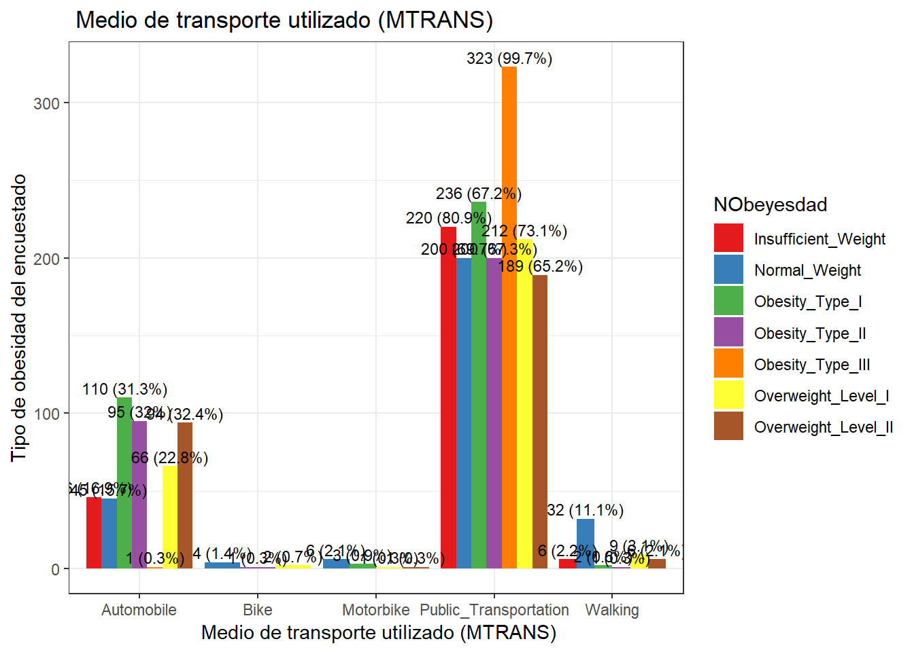
El transporte público se posiciona como el medio más utilizado por la mayoría de los encuestados, con porcentajes entre el 63% y el 99% según el grupo. Las personas con peso insuficiente y normal muestran mayor variedad en sus desplazamientos, incluyendo un uso relevante del automóvil (31.3% y 32.4%) y de la bicicleta (22.8%). Por otro lado, los grupos con obesidad tipo I, II y III dependen casi exclusivamente del transporte público y utilizan en muy baja proporción medios activos como caminar o andar en bicicleta. Estos resultados respaldan la relación entre el predominio de transporte pasivo y el sedentarismo, factores vinculados al exceso de peso.- Comparación variables categóricas independiente respecto a NObeyesdad
datos %>%
group_by(NObeyesdad) %>%
count(Gender, name = "n") %>%
mutate(categoria = Gender,
variable = "Gender",
porcentaje = (n / sum(n)) * 100) %>%
select(NObeyesdad, variable, categoria, n, porcentaje)## # A tibble: 14 × 5
## # Groups: NObeyesdad [7]
## NObeyesdad variable categoria n porcentaje
## <chr> <chr> <chr> <int> <dbl>
## 1 Insuffici… Gender Female 173 63.6
## 2 Insuffici… Gender Male 99 36.4
## 3 Normal_We… Gender Female 141 49.1
## 4 Normal_We… Gender Male 146 50.9
## 5 Obesity_T… Gender Female 156 44.4
## 6 Obesity_T… Gender Male 195 55.6
## 7 Obesity_T… Gender Female 2 0.673
## 8 Obesity_T… Gender Male 295 99.3
## 9 Obesity_T… Gender Female 323 99.7
## 10 Obesity_T… Gender Male 1 0.309
## 11 Overweigh… Gender Female 145 50
## 12 Overweigh… Gender Male 145 50
## 13 Overweigh… Gender Female 103 35.5
## 14 Overweigh… Gender Male 187 64.5La distribución por género revela diferencias notables según el estado nutricional. En el grupo con peso insuficiente, las mujeres son mayoría (63.6%) frente a los hombres (36.4%), lo que podría indicar una mayor prevalencia de bajo peso en el género femenino. En peso normal, la proporción es prácticamente equilibrada, aunque con una ligera predominancia masculina (50.9% frente a 49.1%). La obesidad tipo I presenta un patrón similar, con leve predominancia masculina (55.6% frente a 44.4%). Sin embargo, en obesidad tipo II y tipo III se registran cifras extremas y probablemente inconsistentes —tipo II con un 99.3% de hombres y tipo III con un 99.7% de mujeres— que podrían requerir verificación. En el caso del sobrepeso, la distribución es equitativa, con un 50% para cada género.
datos %>%
group_by(NObeyesdad) %>%
count(family_history_with_overweight, name = "n") %>%
mutate(categoria = family_history_with_overweight,
variable = "family_history_with_overweight",
porcentaje = (n / sum(n)) * 100) %>%
select(NObeyesdad, variable, categoria, n, porcentaje)## # A tibble: 13 × 5
## # Groups: NObeyesdad [7]
## NObeyesdad variable categoria n porcentaje
## <chr> <chr> <chr> <int> <dbl>
## 1 Insuffici… family_… no 146 53.7
## 2 Insuffici… family_… yes 126 46.3
## 3 Normal_We… family_… no 132 46.0
## 4 Normal_We… family_… yes 155 54.0
## 5 Obesity_T… family_… no 7 1.99
## 6 Obesity_T… family_… yes 344 98.0
## 7 Obesity_T… family_… no 1 0.337
## 8 Obesity_T… family_… yes 296 99.7
## 9 Obesity_T… family_… yes 324 100
## 10 Overweigh… family_… no 81 27.9
## 11 Overweigh… family_… yes 209 72.1
## 12 Overweigh… family_… no 18 6.21
## 13 Overweigh… family_… yes 272 93.8La presencia de antecedentes familiares de sobrepeso muestra una clara asociación con los niveles más altos de obesidad. En los grupos de peso insuficiente y peso normal, la proporción de personas sin historia familiar es considerable (53.7% y 46.0%, respectivamente). No obstante, en todos los tipos de obesidad la gran mayoría presenta antecedentes familiares, superando el 95% y llegando al 100% en obesidad tipo III y al 99.7% en tipo II. Este patrón refuerza la influencia de la predisposición genética y de los factores ambientales compartidos en el desarrollo de la obesidad.
datos %>%
group_by(NObeyesdad) %>%
count(FAVC, name = "n") %>%
mutate(categoria = FAVC,
variable = "FAVC",
porcentaje = (n / sum(n)) * 100) %>%
select(NObeyesdad, variable, categoria, n, porcentaje)## # A tibble: 14 × 5
## # Groups: NObeyesdad [7]
## NObeyesdad variable categoria n porcentaje
## <chr> <chr> <chr> <int> <dbl>
## 1 Insuffici… FAVC no 51 18.8
## 2 Insuffici… FAVC yes 221 81.2
## 3 Normal_We… FAVC no 79 27.5
## 4 Normal_We… FAVC yes 208 72.5
## 5 Obesity_T… FAVC no 11 3.13
## 6 Obesity_T… FAVC yes 340 96.9
## 7 Obesity_T… FAVC no 7 2.36
## 8 Obesity_T… FAVC yes 290 97.6
## 9 Obesity_T… FAVC no 1 0.309
## 10 Obesity_T… FAVC yes 323 99.7
## 11 Overweigh… FAVC no 22 7.59
## 12 Overweigh… FAVC yes 268 92.4
## 13 Overweigh… FAVC no 74 25.5
## 14 Overweigh… FAVC yes 216 74.5El consumo de alimentos con alta densidad calórica presenta una relación directamente proporcional con el grado de obesidad. En peso insuficiente, solo el 18.8% reporta consumirlos frecuentemente, mientras que en peso normal el 72.5% lo hace. En los grupos con obesidad, el consumo es casi universal, superando el 95% y alcanzando el 99.7% en obesidad tipo III. Este hallazgo resalta el papel del consumo habitual de alimentos hipercalóricos como un factor conductual clave en la aparición y mantenimiento de la obesidad.
datos %>%
group_by(NObeyesdad) %>%
count(CAEC, name = "n") %>%
mutate(categoria = CAEC,
variable = "CAEC",
porcentaje = (n / sum(n)) * 100) %>%
select(NObeyesdad, variable, categoria, n, porcentaje)## # A tibble: 26 × 5
## # Groups: NObeyesdad [7]
## NObeyesdad variable categoria n porcentaje
## <chr> <chr> <chr> <int> <dbl>
## 1 Insuffici… CAEC Always 2 0.735
## 2 Insuffici… CAEC Frequent… 121 44.5
## 3 Insuffici… CAEC Sometimes 146 53.7
## 4 Insuffici… CAEC no 3 1.10
## 5 Normal_We… CAEC Always 35 12.2
## 6 Normal_We… CAEC Frequent… 83 28.9
## 7 Normal_We… CAEC Sometimes 159 55.4
## 8 Normal_We… CAEC no 10 3.48
## 9 Obesity_T… CAEC Always 6 1.71
## 10 Obesity_T… CAEC Frequent… 6 1.71
## # ℹ 16 more rowsLos patrones de consumo de alcohol varían según el tipo de peso. En el grupo de peso insuficiente, el consumo “a veces” (53.7%) y “frecuente” (44.5%) son las categorías más representadas. En peso normal, predomina el consumo “a veces” (55.4%), seguido de “frecuente” (28.9%) y “siempre” (12.2%). La obesidad tipo I presenta un patrón similar, con ligeras variaciones en los porcentajes. Estos datos no muestran una relación clara y directa entre la frecuencia de consumo de alcohol y el grado de obesidad, aunque sugieren que el consumo moderado es común en todos los grupos.
datos %>%
group_by(NObeyesdad) %>%
count(SMOKE, name = "n") %>%
mutate(categoria = SMOKE,
variable = "SMOKE",
porcentaje = (n / sum(n)) * 100) %>%
select(NObeyesdad, variable, categoria, n, porcentaje)## # A tibble: 14 × 5
## # Groups: NObeyesdad [7]
## NObeyesdad variable categoria n porcentaje
## <chr> <chr> <chr> <int> <dbl>
## 1 Insuffici… SMOKE no 271 99.6
## 2 Insuffici… SMOKE yes 1 0.368
## 3 Normal_We… SMOKE no 274 95.5
## 4 Normal_We… SMOKE yes 13 4.53
## 5 Obesity_T… SMOKE no 345 98.3
## 6 Obesity_T… SMOKE yes 6 1.71
## 7 Obesity_T… SMOKE no 282 94.9
## 8 Obesity_T… SMOKE yes 15 5.05
## 9 Obesity_T… SMOKE no 323 99.7
## 10 Obesity_T… SMOKE yes 1 0.309
## 11 Overweigh… SMOKE no 287 99.0
## 12 Overweigh… SMOKE yes 3 1.03
## 13 Overweigh… SMOKE no 285 98.3
## 14 Overweigh… SMOKE yes 5 1.72El tabaquismo presenta una prevalencia muy baja en toda la muestra, con más del 94% de no fumadores en cada grupo de peso. En peso insuficiente, el 99.6% no fuma, y solo un 0.368% reporta fumar; en peso normal, la proporción de fumadores es ligeramente mayor (4.53%), lo que representa el valor más alto observado. En obesidad tipo I, el 98.3% no fuma, y en tipos II y III prácticamente la totalidad son no fumadores. El sobrepeso también presenta más del 98% de no fumadores. Este patrón sugiere que fumar no es un hábito extendido entre las personas con obesidad, y la mayor proporción relativa en peso normal podría asociarse a los posibles efectos supresores del apetito de la nicotina.
datos %>%
group_by(NObeyesdad) %>%
count(SCC, name = "n") %>%
mutate(categoria = SCC,
variable = "SCC",
porcentaje = (n / sum(n)) * 100) %>%
select(NObeyesdad, variable, categoria, n, porcentaje)## # A tibble: 13 × 5
## # Groups: NObeyesdad [7]
## NObeyesdad variable categoria n porcentaje
## <chr> <chr> <chr> <int> <dbl>
## 1 Insuffici… SCC no 250 91.9
## 2 Insuffici… SCC yes 22 8.09
## 3 Normal_We… SCC no 257 89.5
## 4 Normal_We… SCC yes 30 10.5
## 5 Obesity_T… SCC no 349 99.4
## 6 Obesity_T… SCC yes 2 0.570
## 7 Obesity_T… SCC no 296 99.7
## 8 Obesity_T… SCC yes 1 0.337
## 9 Obesity_T… SCC no 324 100
## 10 Overweigh… SCC no 253 87.2
## 11 Overweigh… SCC yes 37 12.8
## 12 Overweigh… SCC no 286 98.6
## 13 Overweigh… SCC yes 4 1.38La práctica de monitorear la ingesta calórica es poco común en general, pero decrece drásticamente en los niveles más altos de obesidad. En peso insuficiente y normal, un 8.09% y 10.5% respectivamente sí monitorean, mientras que en obesidad tipo I, II y III más del 99% no lo hace. El sobrepeso muestra el porcentaje más alto de monitoreo (12.8%), aunque sigue siendo bajo. Este hallazgo es paradójico, ya que las personas con mayor obesidad —quienes potencialmente se beneficiarían más del control calórico— son las que menos lo practican. Esto podría deberse a falta de conciencia, abandono de hábitos tras intentos fallidos o escasa educación nutricional.
datos %>%
group_by(NObeyesdad) %>%
count(CALC, name = "n") %>%
mutate(categoria = CALC,
variable = "CALC",
porcentaje = (n / sum(n)) * 100) %>%
select(NObeyesdad, variable, categoria, n, porcentaje)## # A tibble: 21 × 5
## # Groups: NObeyesdad [7]
## NObeyesdad variable categoria n porcentaje
## <chr> <chr> <chr> <int> <dbl>
## 1 Insuffici… CALC Frequent… 1 0.368
## 2 Insuffici… CALC Sometimes 154 56.6
## 3 Insuffici… CALC no 117 43.0
## 4 Normal_We… CALC Always 1 0.348
## 5 Normal_We… CALC Frequent… 18 6.27
## 6 Normal_We… CALC Sometimes 161 56.1
## 7 Normal_We… CALC no 107 37.3
## 8 Obesity_T… CALC Frequent… 14 3.99
## 9 Obesity_T… CALC Sometimes 172 49.0
## 10 Obesity_T… CALC no 165 47.0
## # ℹ 11 more rowsLos patrones de consumo calórico muestran que la categoría “A veces” es predominante en la mayoría de los grupos: 56.6% en peso insuficiente, 56.1% en peso normal y 49.0% en obesidad tipo I. El consumo frecuente es muy bajo, con 0.368% en peso insuficiente, 6.27% en peso normal y 3.99% en obesidad tipo I. En cambio, la categoría “No” (no consumir regularmente) es más alta en obesidad tipo I (47.0%) que en peso normal (37.3%) o insuficiente (43.0%). Estos datos muestran un patrón heterogéneo y complejo, donde la frecuencia de consumo no se asocia de forma lineal con el grado de obesidad, pero sí revela diferencias en hábitos alimentarios.
datos %>%
group_by(NObeyesdad) %>%
count(MTRANS, name = "n") %>%
mutate(categoria = MTRANS,
variable = "MTRANS",
porcentaje = (n / sum(n)) * 100) %>%
select(NObeyesdad, variable, categoria, n, porcentaje)## # A tibble: 27 × 5
## # Groups: NObeyesdad [7]
## NObeyesdad variable categoria n porcentaje
## <chr> <chr> <chr> <int> <dbl>
## 1 Insuffici… MTRANS Automobi… 46 16.9
## 2 Insuffici… MTRANS Public_T… 220 80.9
## 3 Insuffici… MTRANS Walking 6 2.21
## 4 Normal_We… MTRANS Automobi… 45 15.7
## 5 Normal_We… MTRANS Bike 4 1.39
## 6 Normal_We… MTRANS Motorbike 6 2.09
## 7 Normal_We… MTRANS Public_T… 200 69.7
## 8 Normal_We… MTRANS Walking 32 11.1
## 9 Obesity_T… MTRANS Automobi… 110 31.3
## 10 Obesity_T… MTRANS Motorbike 3 0.855
## # ℹ 17 more rowsEl tipo de transporte utilizado muestra una transición hacia medios más sedentarios a medida que aumenta el nivel de obesidad. En peso insuficiente, el transporte público es predominante (80.9%), seguido del automóvil (16.9%) y un uso mínimo de caminar (2.21%). En peso normal, el transporte público baja a 69.7%, el automóvil se mantiene en 15.7% y caminar aumenta a 11.1%, apareciendo también medios como bicicleta y motocicleta. En obesidad tipo I, el uso del automóvil aumenta hasta 31.3%, el doble que, en peso normal, mientras que el transporte público y caminar disminuyen. Este cambio sugiere un círculo vicioso donde el aumento de peso favorece el transporte sedentario, reduciendo la actividad física incidental, lo que a su vez contribuye al mantenimiento o incremento de peso. También podría reflejar factores socioeconómicos, como mayor acceso a vehículos particulares en algunos grupos.